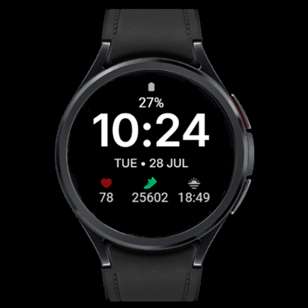

Clear Vision · Wear OS
CV01 Essential
Everyday essentials, clearly arranged.
CV01 Essential is a minimalist Wear OS watch face built around easy time reading. Large digits, a clear date and three information fields below it create a simple layout against a black background.

Key features
- Large digital time and a clear date
- 3 editable complications along the bottom
- Color options for time, date and battery value
- Watch battery level
- Minimal Always-On Display
- High-contrast layout
Gallery
Gallery — 8 images
Select an image to view it full size.
Three fields that fit your day
Choose the information in the lower row. Depending on the complication provider, you can show steps, heart rate, weather or sunset time, for example. The clock remains the focus while your chosen data stays close at hand.
Make the colors your own
Select a color for the clock, date and battery value in the customization menu. Complication colors are controlled by their providers and may stay unchanged when you switch the watch face theme.
Always-On Display
When the watch enters Always-On Display, the face uses a simplified view that keeps the time readable. Enable AOD in the watch settings; its availability and behavior also depend on your device and system settings.
How to customize
- Set CV01 Essential as your active watch face.
- Touch and hold the face, then select Customize.
- Choose data for the three lower fields, then select your preferred color for the time, date and battery value.
- Confirm your selection, return to the watch face and check your data.
Option names may vary by watch and Wear OS version.
Installation and setup →Extra data: Phone Battery Complication
The watch face works without Phone Battery Complication. This external app by amoledwatchfaces is required for selected additional data sources, such as phone battery. Install and configure it on both your Android phone and Wear OS watch. Available options depend on whether the selected field supports the data source.
Compatibility and complications
This watch face is designed for compatible Wear OS watches. Check device compatibility on Google Play before installing. Complication availability, appearance, text length and refresh behavior depend on your watch, Wear OS version and data provider. Not every complication works in every field. If a field remains empty, check the selected app’s permissions or choose another compatible source.
Questions about CV01 Essential
How many fields can I customize?
The three lower fields are editable Wear OS complications.
Does the theme change complication icon colors?
Not necessarily. Their appearance and colors depend on the selected complication provider.
Why is weather missing?
Check your weather complication, connection and app permissions, or select another compatible provider.